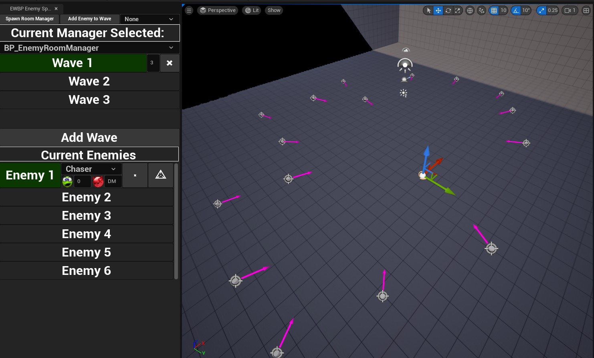

Responsibilities
- Designed and implemented a Limb Based Damage System with headshot modifiers
- Utilized Animation Notifies to set up animation-based attacks for player and enemies
- Designed and implemented all Enemy AI interactions and attacks
- Designed and implemented all Player Character movement and animations
- Handled performance optimization tasks for critical systems
- Utilized Editor Utility Widgets to build tools for other designers
Player Movement
With ULTRAKILL as the reference game, player movement and feel are a core component in allowing the player to feel empowered throughout the entire experience. Two design pillars — Push-Forward Combat and Free Form Movement — drove the decision to replicate ULTRAKILL's movement suite with key changes in how actions chain together.
The full movement suite implemented: Wall Jumping, Wall Clinging, Sliding, Dashing, Ground Pound, and traditional Walking and Jumping. Each mechanic is designed to serve both a defensive and offensive function during combat — giving the player tools to reposition and re-engage simultaneously.
The Parry System
Creating a projectile parry that felt good required balancing across multiple gameplay axes simultaneously. The first key design decision was whether the system should be anticipation-based or reaction-based.
Reaction-based won. The feedback is instant the moment the player presses the keybind — lower barrier to entry, better feel, and the reward loop is tight. Anticipation-based required the player to predict and commit too early, reducing accessibility without adding meaningful skill depth.
Individual tuning per projectile was handled via polymorphism — all projectiles inherit parry code from the parent class, reducing each new projectile to number-tweaking and size scaling. Blueprint Interfaces handled player-to-projectile communication to avoid expensive casting chains at scale.
How the Enemies Were Brought to Life
All enemies share a base class built around three core components: a Combat Manager that ties animation notifies to attacks and manages state transitions, a Health Component universal across both player and enemies handling all damage, healing, and death logic, and a State Manager that tracks the enemy's current behavioral state. Each enemy is individually readable but creates emergent complexity when combined in multi-enemy encounters.
- Instant kill on headshot — rewards accuracy
- Slightly faster than the player — forces direction changes
- Designed to be kited and deprioritized
- Verticality is the primary counter
- Only enemy that staggers on hit
- Any damage resets the attack — reward for consistent aggression
- Useful anchor for level design leading lines
- Larger health pool than Chasers
- Large hitbox offset by high health
- No headshot point — can't be cheesed with precision
- Projectiles avoidable at base movement speed
- Death projectile adds a post-kill skill check
- Velocity-prediction on ranged attack
- Rest window after each attack — exploit the opening
- Close distance triggers melee — stay mid-range
- Large health pool — the fight takes commitment
- High mobility — must be tracked throughout the arena
- Taunt phase: boss stands still, stops attacking
- Taunt is the designed primary damage window
- Large health pool balanced by frequent exploit windows
Performance Optimization
With a fast-paced shooter generating high counts of projectiles, enemies, and overlapping systems simultaneously, performance became a real concern during development. The Unreal Insights Tool was used to identify bottlenecks and profile which systems were generating the most overhead during intensive combat sequences.
Two systems were redesigned specifically to address performance: Health Orbs and Weapon Swapping.
Health Orbs
The original health recovery design was proximity-based — the player passively healed when standing near certain zones. This was replaced with a pip/orb drop system: enemies drop health orbs on death that the player must collect. Beyond the gameplay improvement in feel and intentionality, this introduced a potential performance problem in large encounters where many enemies could die in a short window.
An object pool of 25 health orbs caps the live count in the world at any point. When the pool is exhausted, the oldest active orb is reclaimed and repositioned rather than spawning a new actor. This keeps actor count stable regardless of how many enemies die at once.
Weapon Swapping
Weapon swapping required tracking ammo for stowed weapons — weapons not currently held by the player. The naive approach of spawning separate actors for each stowed weapon to track their individual ammo state would have added persistent overhead for every weapon slot.
A single separate actor is responsible for all stowed weapon data. It tracks ammo counts per-weapon without requiring individual weapon actors to exist in the world while stowed. Combined with object pooling on the weapon actors themselves, the system avoids unnecessary spawn/destroy cycles during swaps.

Enemy Wave Manager Tool
Wave-based combat required a system for designers to configure which enemies spawn, when they spawn, and in what quantity — per wave, per encounter. The initial implementation used nested arrays configured directly in Blueprints, which worked technically but was difficult for other designers to navigate and error-prone to edit.
A custom Editor Utility Widget replaced the raw array interface with a purpose-built tool. Designers can now navigate directly to wave managers from within the widget, control per-wave startup timing, replace enemy spawn points while preserving their existing settings, and set custom health values per individual enemy instance — all without touching Blueprint arrays directly.
